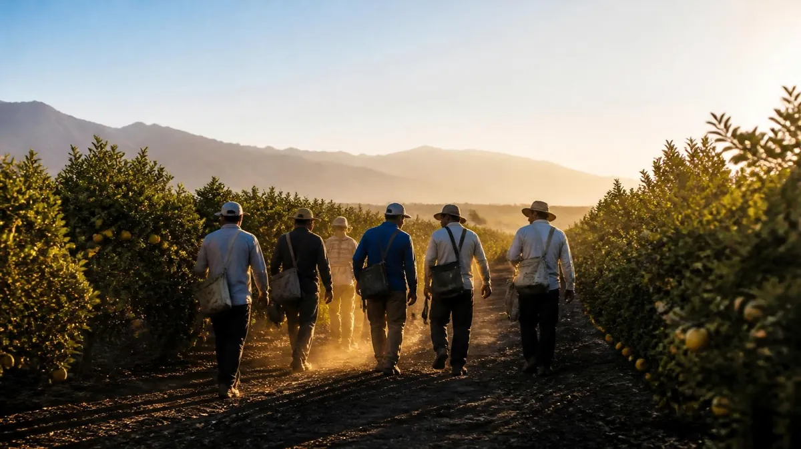

Encadenamos cosechas para que la temporada no se termine.
Bandada es una empresa de servicios para el trabajo rural de temporada. Conecta a las empresas productoras con cuadrillas organizadas y a quienes cosechan con una temporada que sigue en la próxima cosecha.

Misión
Encadenar cosechas de distintas regiones en un circuito anual.
Visión
Ser la red de referencia del trabajo rural de temporada en el Mercosur.
Lo que nos guía.
- 01
Continuidad
Que el trabajo siga de una cosecha a la otra.
- 02
Encuentro
Juntar a quien necesita una cuadrilla con quien quiere trabajar.
- 03
Formalidad
Trabajo registrado y reglas claras para todas las partes.
- 04
Cumplimiento
Hacer lo que acordamos, en tiempo y forma.
- 05
Transparencia
Decir qué sabemos, qué estamos probando y de dónde sale cada dato.
Cómo nos organizamos.
La estructura prevista para el primer año de operación.
- Gerencia generalDefine el rumbo y coordina las áreas.
- Administración y finanzasCostos, cobros y el modelo de cada ruta.
- MarketingLa relación con productores y trabajadores, y este sitio.
- Innovación y tecnologíaEl Pasaporte Bandada, los pedidos y Cosecha Trazable.
- Recursos humanosRegistro, formación y acompañamiento de las cuadrillas.
- Logística y operacionesTraslados, alojamiento e inspecciones, con inspectores en Catamarca, Tucumán y Buenos Aires.
- Jefes de BandadaUna persona a cargo de cada cuadrilla en la finca.